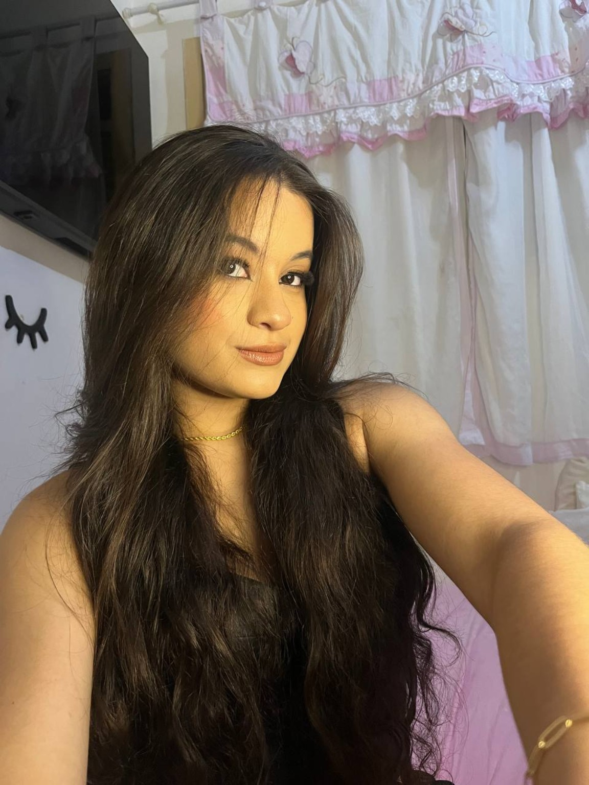
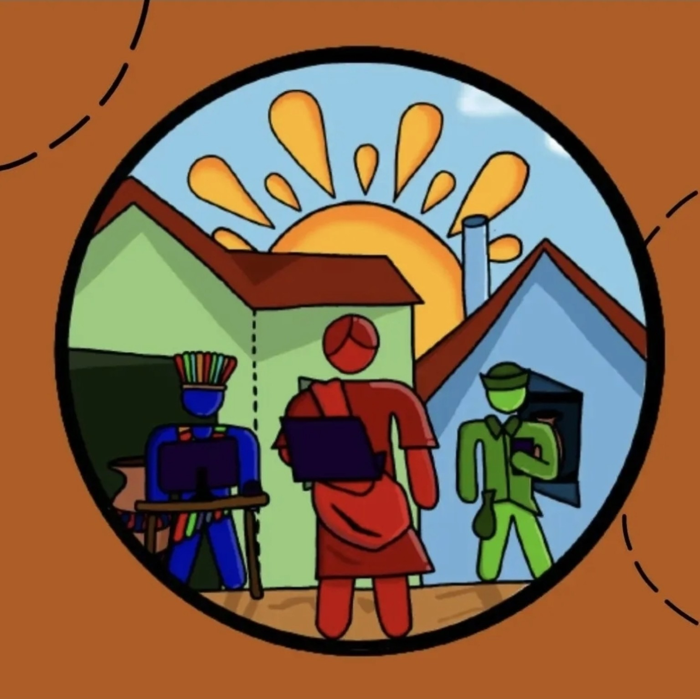
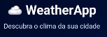
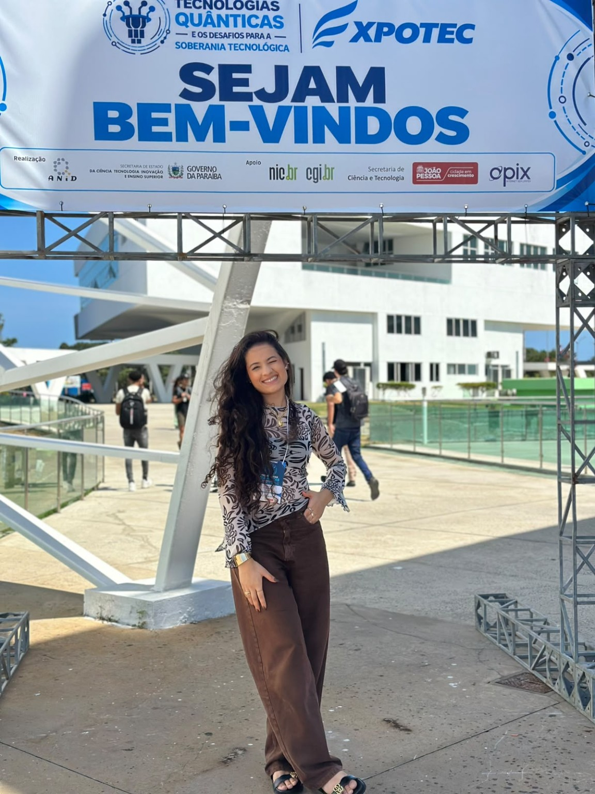
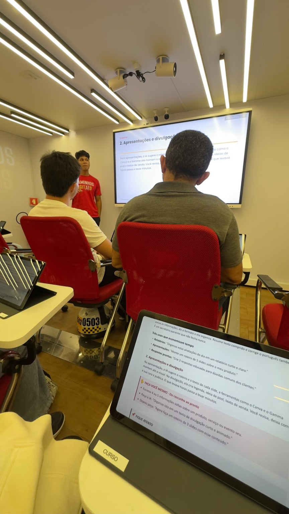

Python
Programação
PORTFÓLIO • 2026
HELLO, WORLD!
DEVELOPER IN PROGRESS
Estudante de Análise e Desenvolvimento de Sistemas · UEPB

01 / QUEM SOU
Olá! Eu sou Milena.
Sou estudante de Análise e Desenvolvimento de Sistemas na Universidade Estadual da Paraíba (UEPB) e técnica em Programação de Jogos Digitais.
Tenho interesse em tecnologia, desenvolvimento de software e criação de experiências digitais. Gosto de unir lógica, criatividade e colaboração para transformar ideias em projetos.
Tecnologia também é sobre criar, colaborar e resolver problemas.
— MILENA KAROLINE02 / STACK
Tecnologias e ferramentas que fazem parte da minha jornada.
Programação
Programação
Desenvolvimento
Versionamento
Design e conteúdo
Edição de vídeo
* Barras representam familiaridade pessoal, não certificações.
03 / SELECTED WORK
Ideias transformadas em experiências e soluções.

LOCAL • CULTURE • CONNECTIONAplicativo pensado para conectar consumidores a produtos de artesãos locais, valorizando o artesanato e fortalecendo a economia criativa.
Práticas acadêmicas e exercícios de programação para desenvolver raciocínio lógico, algoritmos e resolução de problemas.
Meu espaço digital para apresentar projetos, experiências, habilidades e minha evolução na área de tecnologia.

ABRIR APLICAÇÃO ↗Aplicação web de clima com a proposta de ajudar usuários a descobrir as condições meteorológicas da sua cidade.
Acessar WeatherApp ↗04 / EXPERIÊNCIA
LIDERANÇA • COMUNICAÇÃO
Atuação na comunicação e no marketing da Maratona Feminina de Programação da América Latina, contribuindo com conteúdos e iniciativas para ampliar a participação e o pertencimento de mulheres na programação competitiva.
ENSINO SUPERIOR
Graduação em andamento, com foco na construção de conhecimentos em desenvolvimento de software, algoritmos e tecnologia.
ENSINO TÉCNICO
Formação técnica pela ECIT Professor Bráulio Maia Júnior.
05 / PARTICIPAÇÃO
Experiências, conexões e aprendizados na área da tecnologia.

↗ ampliar foto2026 • TECNOLOGIA E INOVAÇÃO
Participação na EXPOTEC 2026, evento de tecnologia e inovação que trouxe discussões sobre tecnologias quânticas e soberania tecnológica.
Participação
↗ ampliar fotoGOVERNO DA PARAÍBA • INCLUSÃO DIGITAL
Participação nas atividades da carreta do Projeto Caminhos Digitais, iniciativa do Governo da Paraíba voltada à formação e inclusão digital.
Experiência formativaCOMUNIDADE • LIDERANÇA • TECNOLOGIA
Atuação como Vice-Diretora de Marketing da MFP, contribuindo com a comunicação, divulgação e fortalecimento de um espaço de participação e pertencimento para mulheres na programação competitiva.
Vice-Diretora de Marketing06 / APRENDIZADO CONTÍNUO
Olimpíadas, reconhecimentos e formações que fazem parte da minha trajetória.
Participação na Maratona Feminina de Programação da Universidade Federal de Campina Grande.
Participação na Olimpíada Nacional em História do Brasil.
Reconhecimento com medalha de prata na Olimpíada do Meio Ambiente.
Menção honrosa na competição paraibana de informática.
Cheguei à semifinal da OBI, sendo a única mulher da minha cidade a alcançar essa etapa.
Conquista do primeiro lugar junto à minha equipe com o projeto UNEARTE, uma solução voltada à valorização e comercialização do artesanato local.
Formação em mídias sociais, criação de conteúdo e comunicação digital.
Curso sobre fundamentos e aplicações da Inteligência Artificial.
07 / RECONHECIMENTOS
1º lugar no Ouse Criar, Cidades Criativas, com o projeto de valorização do artesanato local.
Semifinalista da Olimpíada Brasileira de Informática.
Destaque na Olimpíada Paraibana de Informática.
08 / CONTATO
Estou aberta a conexões, oportunidades e conversas sobre tecnologia.